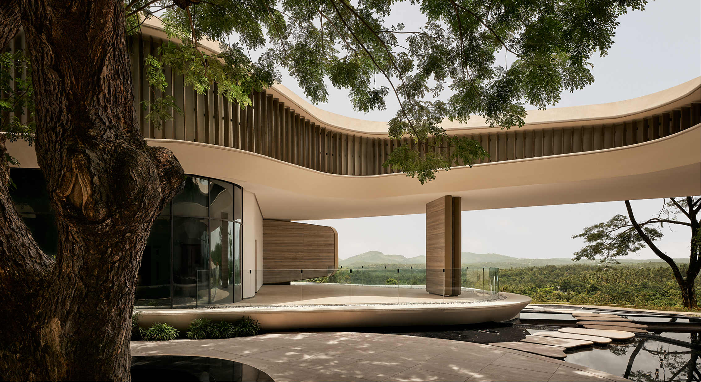

Diagnose
Begin with a deeper understanding of your health, guided by clinical insights.

TULÅH × BBC STORYWORKS
One person. A deeper understanding.
A different approach to being well.
A MORE PERSONAL PERSPECTIVE ON WELLNESS
What does it mean to understand the person beyond the symptoms? At tulåh, modern clinical care and time-honoured healing come together in a journey shaped around you.
Step inside our sanctuary through Dena Lawrence’s story, told in a film by BBC StoryWorks Commercial Productions.
Discover her journey ↓THE FILM
Discover tulåh through the
In Pursuit of Wellness series.

A commercial production by BBC StoryWorks Commercial Productions, paid for by tulåh.
THE TULÅH APPROACH
A connected path from understanding
your health to supporting your wellbeing.
Begin with a deeper understanding of your health, guided by clinical insights.
Bring your findings, personal history and goals into one connected picture.
Follow an individual plan that brings clinical care and healing practices together.
Carry the principles of your journey into the way you live beyond your stay.
BEYOND THE FILM
There is more to a personal journey than a film can hold. This space is reserved for Dena Lawrence’s additional guest testimonial.
Preview placeholder — no testimonial or clinical outcome has been invented.
A CLOSER LOOK AT THE CARE
Space for the doctors’ perspective on Dena’s care, connecting the clinical detail to the personal story.
CONTENT PREVIEW · PENDING CLINICAL REVIEWPlaceholder for the diagnostics used and what each assessment explored. To be completed with the clinical team.
Placeholder for doctor-approved findings and underlying concerns identified.
Placeholder for the modalities and interventions included in the care plan.
Placeholder for approved observations, follow-up and individual outcomes, with appropriate context.
YOUR STORY STARTS WITH A CONVERSATION
Share what brings you to tulåh. Our wellness concierge
can help you explore a journey around your needs.
BEFORE YOU BEGIN
Start by speaking with the wellness concierge about your goals. The team can explain the options and next steps before you plan your stay.
tulåh is in Chelambra, Malappuram district, Kerala, India. Ask the team about travel arrangements.
Yes. Enquire online or call the reservations and guest assistance team on +91 87140 50047.